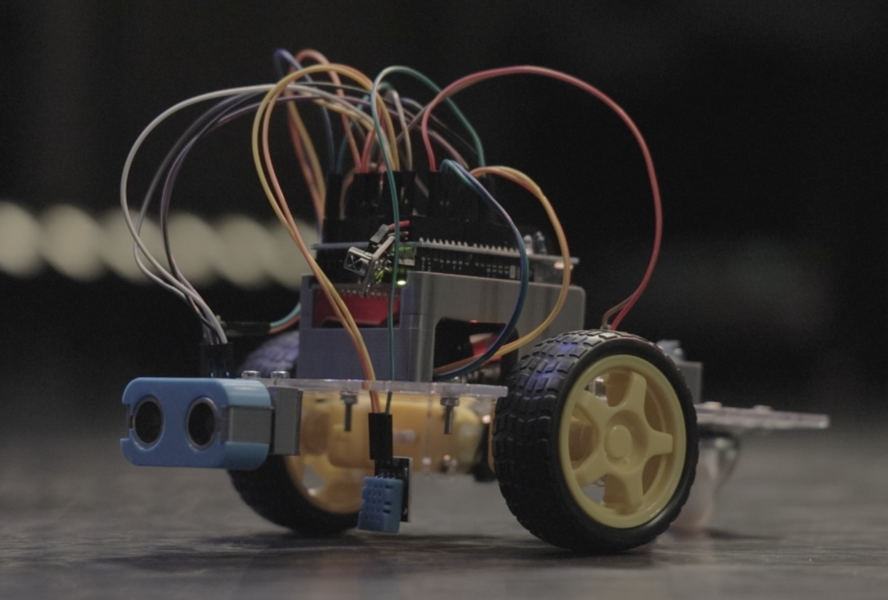

Learning to teach robotics 2
The pilot robotics course went quite well so we were naturally motivated to continue. What followed were three more streams, where we tried out - with various degrees of success - a lot of different ideas. This is a lessons learned post describing those attempts and how they played out. I will mostly focus on the organizational and conceptual aspects, leaving the technical details of the platform we used for a later post.
There are two strategies for learning something new. If you have the time, you can systematically work your way through the fundamentals, gradually going from the basics to more advanced topics, letting the knowledge sink in. That’s how university education works. If you don’t have the time (and who does, right?), you start doing something and learn as you go. That’s how startups work.
That’s how we learned to teach robotics, too. For the lack of a better term, let’s call it intuitive pedagogy. I’m sure thoughts that will follow are mostly self-evident if you have a formal education as a teacher. We didn’t. Instead, we put together a course that seemed plausible, with the intention of getting into a feedback loop as quickly as possible. Here’s the feedback we got and how we dealt with it.
Lectures don’t work, slides don’t matter
The original idea of splitting the course into two parts - basics and projects - stayed intact. During the “basics” sessions we would usually take turns going through several PowerPoint slides covering the new topic. As it quickly turned out, these short lectures do not work. Not even a little.
I was biased by my university teaching experience, where one could talk about something for an extended period of time, without losing the audience. Not the case with kids. And I don’t mean 30-minute-long monologues, even 2-3 minutes of you talking without any interaction was way too much. I could almost read the word “b-o-r-i-n-g” on their faces, no matter how much effort I put into the slide design.
What worked well, on the other hand, was staying in a constant discussion mode. I would say a couple of sentences, then check in: “What do you think? Why is this a problem? What can we do about it? Do you have an idea how this could work?” In my experience, the kids usually eagerly engaged in such discussions. Interestingly, it did not matter that much whether you had slides during those conversations or not. Of course, some concepts are easier to illustrate if you have a picture at hand. But most of the time just brainstorming together was really enough. Such discussions also worked well during the recaps at the beginning of each session where we tried to quickly refresh the concepts from the previous meetings.
This also nicely played together with the role I wanted to take in the whole process. I did not see myself as a teacher in the classical sense, rather what a senpai is in karate - someone more experienced, one who has trained longer. Eye-level discussions with me as a moderator felt exactly right.
They have better ideas than you do
In the second half of the course, I wanted to give the kids more freedom with their projects. Starting from the second stream, every team would design and build their own custom robots.
During the brainstorming sessions the room would buzz with ideas. Our main task as mentors was directing the kids’ fountains of creativity, wrapping their proposals into something the teams could actually implement within the following 4-5 weeks. There is some delicacy to it. You need to convert their often extremely ambitious ideas into a workable plan, while preserving the authors’ original intention.

We even asked every group to jot down a brief project plan. Of course, those went astray right after the first step but it was not a bad thing to do nonetheless. The young engineers got a glimpse of how plans often work out in reality.
To this day I am vastly impressed by the projects with which the teams came up. Letting them decide what to do was better than handing out fixed tasks on so many levels. As a result, we got a remote-controlled painter that could draw shapes similar to those from a spirogrpah.
A Mars rover that would collect atmospheric measurements and transfer them to Earth in Morse code. Guess how we simulated the temperature changes?

A custom-sculpted moveable manipulator.
A robot that would scan the environment and display the map on the screen.
An many more. I could dedicate the entire post to the awesome kids’ project. In summary, creative part of the course - definitely a go.
Documentation is important (but don’t call it that)
In the first stream there were no materials we could hand out to the students. They would simply ask us every time they forgot how to connect some component or how to use some coding block. This worked but was definitely not perfect.
I’m not sure which is the best learning medium for gen alpha but as a millenial I figured it could be videos so I started a YouTube channel. This gave me a chance to direct those who missed a session to the corresponding video, instead of trying to squeeze in 15 minutes worth of information into a short one-on-one conversation during the next class. This also opened a door to handing out some optional homework assignments for those who wanted to practice outside the classroom.
The reality was slightly different. First, no one likes homework (well, who could have guessed!). There were occasional people who would touch the Arduino at home but their number was disproportional to the effort I had to put into those videos. Second, it is not a coincidence that hardware has “hard” in it. You have to connect everything correctly, otherwise some components might burn. You have to debug if something does not work right away. You have to figure out how to deal with occasional equipment hickups and imperfections. All of those are fine if there’s an experienced mentor sitting next to you, providing real-time feedback. When you are 12 years old, trying to replicate something from a YouTube video alone, it quickly gets tricky.
Plus, we were constantly changing something about the course so the videos got outdated a couple of weeks after I published them. All of those reasons made me quit after recording about five videos. At some point I might come back to it though. While time-consuming, video production actually was fun. There was also some positive feedback. My video about the basics of Arduino programming got around 2K views, which was surprising given that I never advertised it anywhere - all those came organically through YouTube’s recommendation system.
Instead of videos, we ended up putting together a couple of documentation pages summarizing how to connect certain components and how to control them with blocks. Those were not self-sufficient, you could not learn a completely new topic from them. They rather worked as a quick reference. A final marketing tip: calling them documentation, however professional it may sound, does not agree with kids. The word is too scary. Cheatsheet is better.
3.3333333 students per mentor
Kostya and I finished two streams together, then he had to leave the project. I started looking for a new companion an luckily found Vova, a brilliant engineering student. The two of us ran the third stream. After that, I got approached by Natasha. She was the mother of one of the boys who attended the first stream, and she wanted to join as a mentor now. For the fourth stream we became a trio, and things instantly got so much better.
With individual projects and inexperienced audience two people often can’t provide enough support. There is simply too much multi-tasking: debugging hardware issues, discussing the next implementation step, configuring the environment, explaining the concept someone missed… Three mentors for ten students turned out to be a perfect ratio.
Finally, I came up with a brand name - this is when the project officially became LOCO School.
LOCO as in locomotion, making the robots drive and driving the students forward. And if you feel a little Spanish, LOCO as in a not-quite-your-regular school with a bit of good craziness, making it so much more fun.